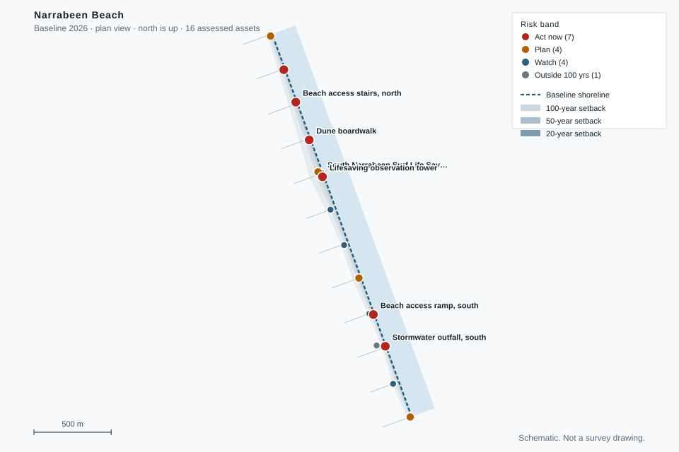

Coastal asset risk register
Loading the site model
This page reads model.json.
Ranked assets
| # | Asset | Band | Exposure | Score | Replacement | Confidence |
|---|
Plan view
The dashed line is the baseline shoreline. The shaded bands are the 20, 50 and 100 year setbacks. Asset colour shows the band.

Priority interventions
Method and limits
Each asset is matched to the nearest shoreline transect. The inland distance is measured along that transect from the baseline shoreline. The setback at a given year is the retreat rate multiplied by the number of years.
Bands. A is 0 to 20 years. B is 20 to 50. C is 50 to 100. D is beyond 100 years or no retreat. The score is 0.6 times urgency plus 0.4 times consequence. Consequence combines replacement cost, daily users and criticality.
Limits. The rate is historical, not a forecast. The model assumes a constant rate. Storms, wave run-up and sea level acceleration are not included. Costs are order-of-cost and need an engineer's check. This is a screening aid, not a statutory assessment.